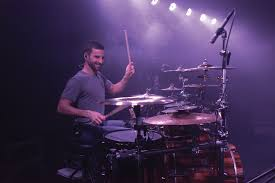
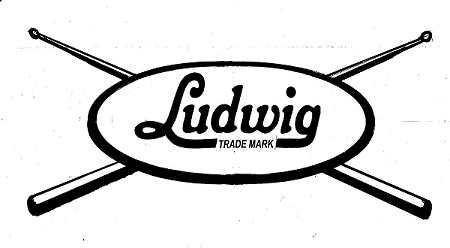

 It may seem impressive that today's top performers show crazy talents and techniques with their kit's, but in reality, this has been happening for quite a long time. It is only recently that technology has grown to the level where we can create, experiment, and experience drumming in multiple different ways. The modern percussional drum set consist of several different inventions, but the basis of a drum set consists of a bass drum and a snare drum. So, that is where we will start.

The year is 1900, and this is the time in The United States of America where innovators paved the way for the rest of the century. Sonor Co., a german company founded in 1875, is a percussion company in the business of making instruments for theatres and orchestras. They were the first inventors of the drum pedal, with the intentions of freeing up a hand, so that the bass drum player can also operate the snare drum. The invention was failure, due to the lack of mobility of the pedal. It wasn't until 1909, the sons of a german immigrant to the U.S., William F. Ludwig Sr., and his brother Theobald Ludwig, founded the Ludwig & Ludwig Co., and patented the first usable Bass Drum Pedal.
The system consisted of a beater, pedal, and belt. This was revolutionary and the beginning of the drum kit. In 1926, the same pedal mechanism was attached the hi hats used with kits, free up more hands and creating a larger range of motion for the drummer. With this new technology, also came the use of new techniques. It was agreed upon until 1939 that there was two types of pedal techniques use with drummers, the "Heel-Up Technique" and the "Heel-Down Technique". This when the Jazz artist Buddy Rich began his career and the world got a glimpse of the "Heel-Toe" technique. Where-as the Heel-up and Heel-Down techniques complete one stroke, either with the power of your thigh or ankle, this new "Heel-Toe" technique allowed the drummer to use two strokes in the same range of motion as one, creating a booming sound of bass.